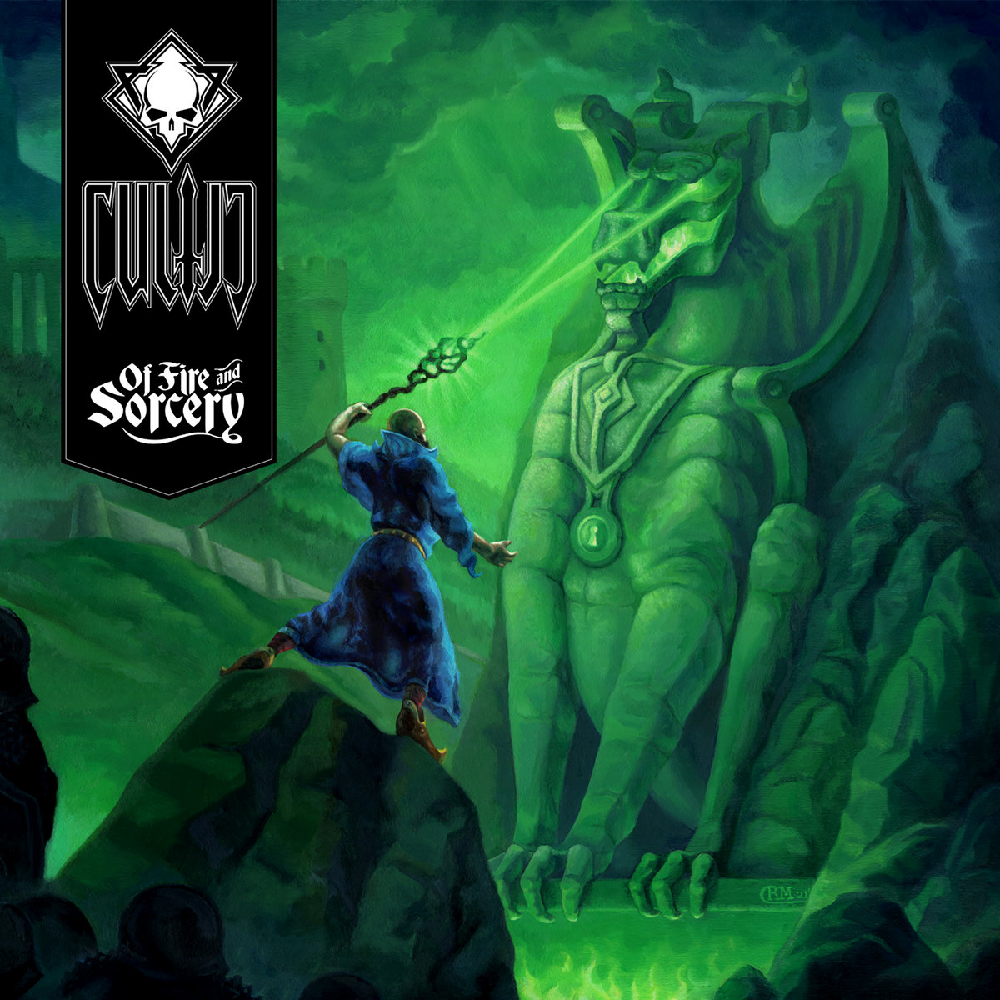

Amerikalı Death/Doom Metal ikilisi Cultic, Fire & Sorcery adını taşıyan ikinci albümlerini geçtiğimiz günlerde çıkardı. Gitarlarda ve vokalde Brian Magar, davulda Rebecca Magar’dan oluşan Cultic’in yeni albümü, ilk albümleri gibi karanlık epik fantazi hikayesi temaları ile oluşan şarkı sözlerine sahip.
Albüm ilk albüm gibi karanlık, bulanık bir prodüksiyona ve ham gitar ve davula eşlik eden karakteristik vokal öğelerine sahip. Bu doğal karanlık yapı son yıllarda extreme müzik dinlerken aradığım bir özellik.
Of Fire & Sorcery’nin ilk albümden farkı şarkı geçişlerinde ve aralarda fazlasıyla deneysel senfonik melodi bulundurması. Bu tema zaman zaman gereğinden fazla uzun ve açıkçası ben biraz sıkıcı buldum. Belki seveni vardır ancak albümün temposunu düşüren bir katman. Ayrıca 12:50 dakikalık Iron Castle Redux şarkısının boş bölümünün amacı nedir çözemedim.
Bu olumsuzlukların yanında Of Fire & Sorcery Doom/Death dinleyicileri için 2022 yılının en önemli en sert albümlerinden biri olarak yerini alıyor Cultic arşivinde.🤟🏼🤟🏼🤟🏼🤟🏼